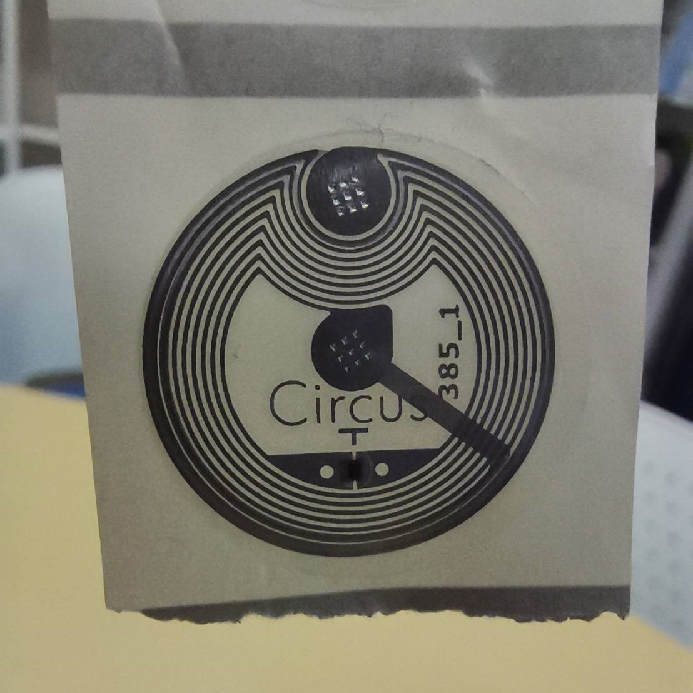

上のNFCタグというものを使って遊んでみたレポートです。厳密にはRFID(のUHF)ですが、図書館で本を勝手に持ち出すとブザーが鳴ったり、ユニクロのセルフレジで服が自動で清算されたりするのはこれと同じ仕組みの通信が行われているためです。
RFIDとは
RFID(Radio Frequency Identification)は無線周波数を用いたタグの識別を広く指す言葉で、そのうちの一つにNFC(Near Field Communication)、近距離無線通信という技術があります。無線周波数を用いますが、NFCや前述したUHFはタグ自体に電源は不要で、センサー(スマホなど)から放たれる電波をタグのアンテナ部が反射することで通信が行われます。NFCタグの場合、以下のように電波を反射するアンテナ部と、識別情報などを記録するメモリ部が構成されていることがあります。ちなみにこれはシール状になっていて、色々なところに貼り付けることができます。学生証を読み取ってみる(自己責任)
ユニクロの服に使われているタグはUHFというタイプのもので、実際に読み取るセンサーは簡単に手に入るものではありませんが、NFCの場合、スマホで読み取ることができます。私のスマホはAndroidなので、今回はNFC Toolsというアプリを使って学生証に埋め込まれているはずのNFCタグを読み取ってみようと思います。なお実際に試してみる際は自己責任でお願いします。また、一番下にはメモリー情報、4kバイトとあります。あの薄いカードに4キロバイトの情報を保存するメモリが内蔵されているのは面白いですね。学生証のオモテ面にある個人情報は余裕を持って記録できるでしょう。
マイナンバーカードも読み取ってみた
ちゃんと遊んでみる
本題に入ります。NFCタグを少しだけ入手することができたので、それでなにかプログラムめいたものを作ってみます。なお環境は
端末：HUAWEI nove5t
OS：EMUI
使用アプリ：MacroDroid
となります。
MacroDroidの機能はiOSでいうところのショートカット(Workflow)にあたります。MacrodroidでもNFCタグを読み取り、特定のタグが読み取られた際になんらかのアクションを起こすよう設定することができます。
かなり雑ですが、教科書にスマホをかざすと講義の情報を表示してくれるショートカットだと以下のようになります。 ①教科書にタグを貼る
勤怠管理にも使えるかもしれません。 ①記録用ファイルを作成
まとめ
個人的にNFCタグの勤怠管理システムは実用性が高い気がします。実際にいろいろ試してみるとマクロの設定以上に、どんな目的でNFCタグを使うのか考えることのほうが大変ですね。とはいえプログラミングとは違った趣きがあり楽しかったです。正直NFCタグは個人で買うとなるとかなり微妙な価格で、高くはないけど試す程度には買うまでもない価格です。使ってみたい方は金城まで。